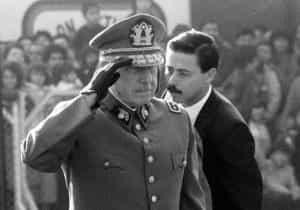
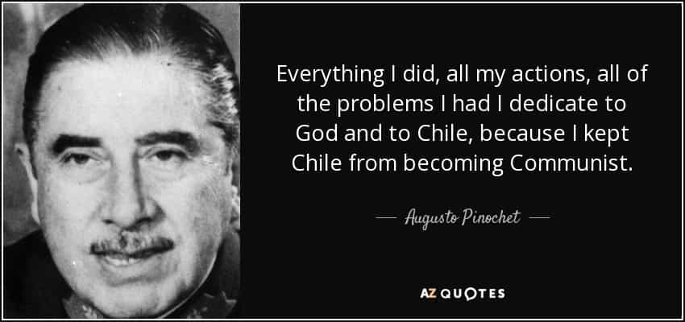
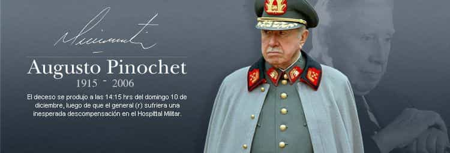

Quintus can be found at qcurtius.com. He is the author of the books On Duties, Thirty Seven, Sallust: The Conspiracy Of Catiline And The War Of Jugurtha, and other books. His work has been reviewed at Taki's Magazine. He can be followed on Twitter


Recent incidents of leftist violence in the United States have caused some thoughtful commentators to consider the possibility of a return to 1970s-style leftist terrorism in the West. For most young people today, names like the Red Brigades, the Japanese Red Army, the Baader-Meinhof Organization, and Carlos the Jackal mean little. But in their day these groups caused a considerable amount of damage and subversion in the places they conducted their business. The “student protest” movements of the 1960s were the direct progenitors of such leftist terror groups; and as antiwar activism died down, overt violence—bank robberies, bombings, assassinations, and similar acts—took its place. Even though such groups may be quite small in number, they can contribute to a climate of fear and chaos far out of proportion to their memberships.
With many sectors of the media and some public figures in the United States actually stoking the fires of sedition and treason, it is probably only a matter of time before things happen that make the recent Berkeley riots seem quaint by comparison. It is possible that some of the so-called “protest” groups of today could metastasize into professional terrorist organizations. With funds supplied by interested parties abroad (i.e., state actors or other terror groups), such groups would rise to the level of national security threat that would justify their repression or dismantling. Law and order are a government’s most pressing functions; without them nothing of any importance can be accomplished.

It was against this backdrop that I finally took a close look at the record of Chile’s former dictator Augusto Pinochet. Pinochet took power in a 1973 coup and ruled the country until 1990. In the conventional “wisdom” peddled by the US media, he was a ruthless authoritarian who violently repressed leftist protesters and ruled Chile with an iron hand. It is true that his government violated human rights, shut down political parties, and dismantled trade unions. But this is not the entire story. A close look at the actual record shows that there was a very real threat of a communist takeover in Chile at the time, and that Pinochet’s economic policies laid the groundwork for Chile’s economic prosperity today.

In a 1991 interview, finance minister Alejandro Foxley said, “We may not like the government that came before us. But they did many things right. We have inherited an economy that is an asset.” Pinochet’s government overthrew the leftist regime of Salvador Allende. Eduardo Montalva, who served as Chile’s president before Allende, called Allende’s regime a “carnival of madness.” Leftist violence had become commonplace by 1973; the economy was in tatters; and politics had reached a point of near paralysis. When we read Allende’s speeches and policies today, he comes across as a 1970s version of Venezuela’s Hugo Chavez. And as everyone knows, Chavez’s policies destroyed his country’s economy and edged it to the brink of social chaos.
It is beyond question that Allende—before he was overthrown—was trying to transition Chile into a communist political and social system. The country was on the brink of civil conflict in 1973 and was only saved from disaster by the intervention of a military government.

It is against this backdrop that the Pinochet takeover must be seen. Just before Pinochet’s coup, Chile’s Chamber of Deputies in August 1973 voted 81-47 that Allende had systematically destroyed the rule of law and the institutional structures of the country. Furthermore—and this is never mentioned by the media today—Pinochet’s coup was supported by the majority of the Chilean people and by Allende’s predecessor Montalva.
What specifically did Pinochet’s government do? According to a study conducted by the Hoover Institution:
Domestic banks were deregulated in the late 1970s but reregulated with vigor in the early 1980s. Poverty had increased enormously during and in the wake of the UP’s disastrous economic policies, and it decreased only as a result of the state-led stabilization policies, structural reforms, and targeted social programs of the Pinochet period. Major state expenditures for direct action social programs targeted to the poorest of the poor were initiated in the middle 1980s, not after 1990. Poverty levels, as high as 50 percent in 1984, were reduced to 34 percent by 1989. They continued to fall after 1990 to 15 percent in 2005…[The Pinochet government] created the underlying economic policies and structures in the 1970s and 1980s that [its successor] maintained and that produced jobs for the poor and an economic surplus to enable targeted state antipoverty programs.
The Hoover Institute study, quoted above, goes on to say that Pinochet’s authoritarian government actually served as a beacon of innovation around the world that is still followed today. He was able successfully transition his country from a “statist” model to a “market” model long before China or Britain were able to do so. The study concludes:
At that time the Chilean economic model was considered anathema almost everywhere—partly because of its association with Chile’s military regime but also because it was viewed (wrongly, as it turned out) as an unthinkable, reactionary model per se, especially for developing countries. (Of the many military regimes in Latin America in the sixties, seventies, and eighties, the only one to break with state capitalism was Chile’s.) But global perceptions of the Chilean economic model changed, slowly at first, more rapidly and massively after the mid-1980s. By now, the economic policies of most countries of Latin America; North America; Western, Central, and Eastern Europe; China; India; Russia and its former republics; much of Africa; and many other places around the world have followed the Chilean lead rather than fled from it.
Pinochet himself got little thanks for his accomplishments. While the left celebrates men like Hugo Chavez and Fidel Castro, Pinochet is kept locked in the closet of public opinion as a knuckle-dragging dictator. The truth is quite different. Leftist groups successfully petitioned for Pinochet’s extradition to Spain in 1988 for trial on alleged human rights abuses; yet they never called for the extradition and trial of Castro. Any objective look today at the economies of Chile, Venezuela, and Cuba leave no room for doubt about whose policies were better for their people. While Pinochet’s government certainly arrested and executed political opponents, a strong case can be made that the positive features of his regime outweighed the bad. Recognition of this fact is long overdue.
Read More: What The Berkeley Riot Means For America